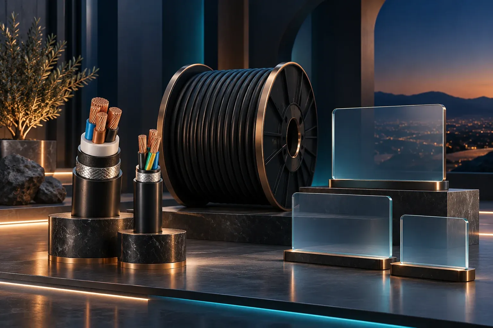
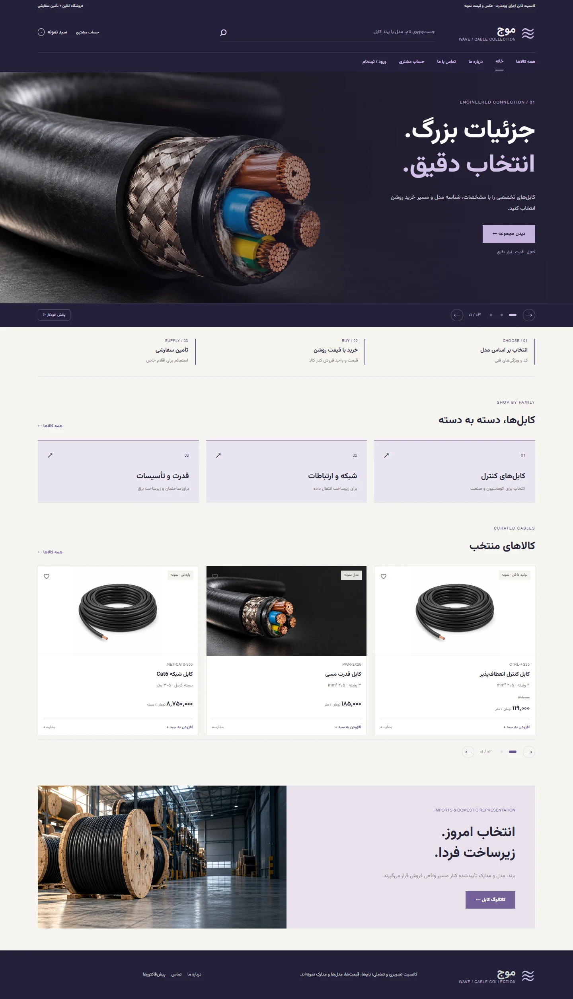
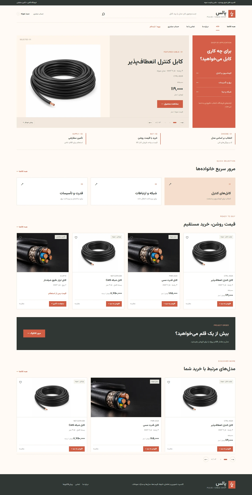
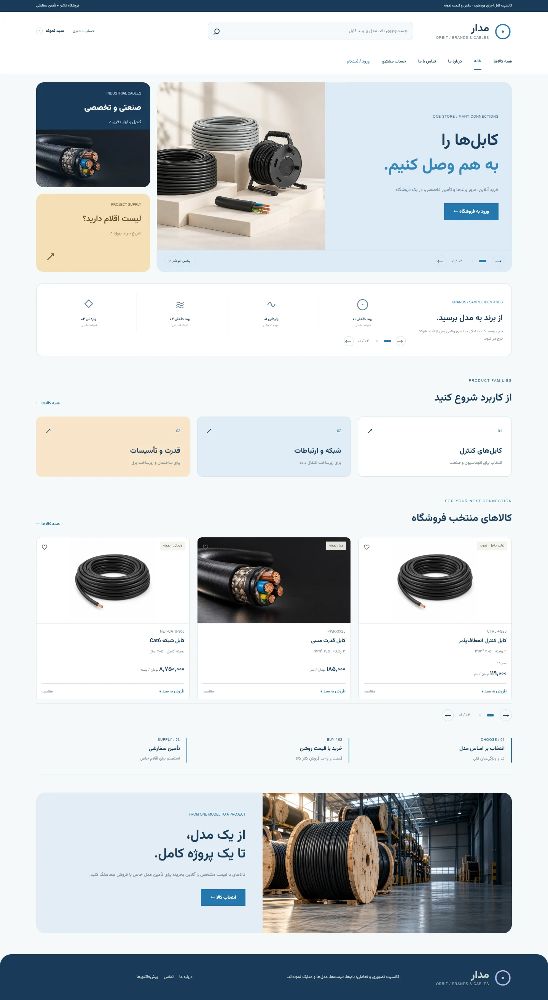
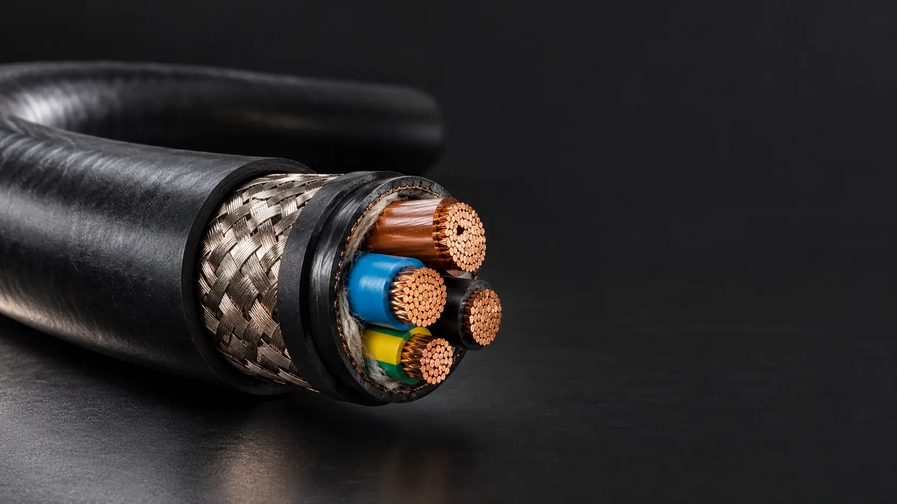
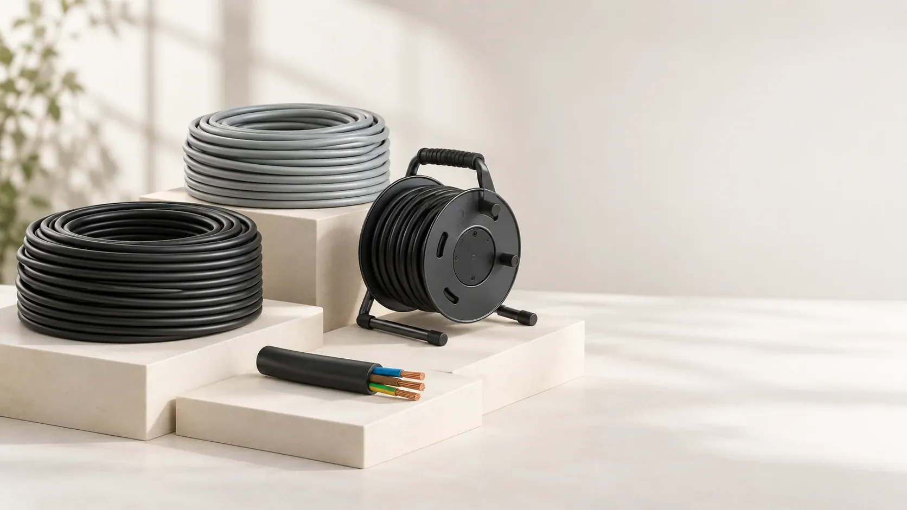
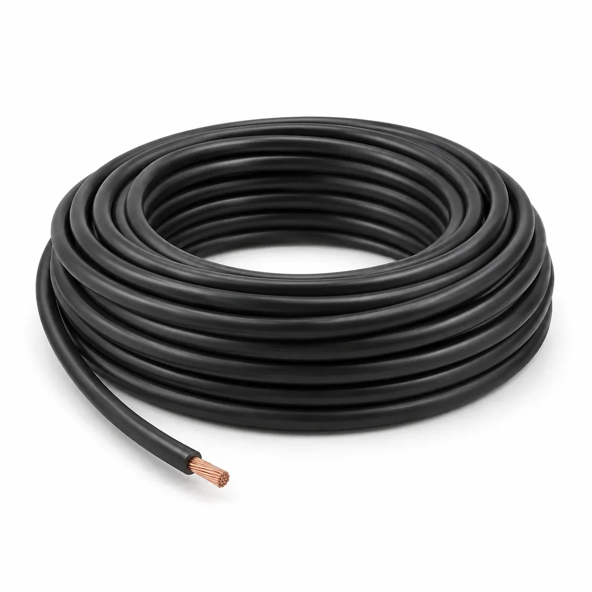

موج · بنر تمامعرض
محتوای هر اسلاید، جداگانه با المنتور ویرایش میشود.
- ساخت مجموعه در Slides → Sliders.
- افزودن اسلایدها در Slides → Add Slide؛ تصویر پسزمینه، تیتر و دکمه مستقل.
- درج ویجت Slider در خانه و تنظیم ارتفاع و نمای گوشی.
سه هویت موج، پالس و مدار، هرکدام با هفت صفحه: خانه، فروشگاه، محصول، درباره ما، تماس، حساب مشتری و ورود. طرحها را در دسکتاپ و گوشی ببینید و اسلایدر، درخواست و پیشفاکتورهای نمایشی را تجربه کنید؛ راهنمای اجرای وردپرسی همراهشان است.

عکس بنر، تیتر، دکمه و فاصلههای صفحه در المنتور تغییر میکند. قیمت، موجودی، SKU و گزینههای هر کالا در محصول ووکامرس نگهداری میشود و در همه نماها یکسان نمایش داده میشود.

اسلایدر تمامعرض، تصویر بزرگ و ترکیب بنفش و ذغالی.

ویترین چرخشی محصول، قیمت خوانا و دستههای کاربردی.

بنرهای ترکیبی، کاروسل برند و هویت آبی و کهربایی.
هفت صفحه هر مجموعه را از تبها انتخاب کنید؛ تصاویر کامل گوشی و دسکتاپ داخل قاب اسکرول میشوند. برای کار با فرم، حساب، پیشفاکتور و ورود، لینک «نسخه تعاملی همین صفحه» را بزنید. پیشنمایش اسلایدر در همان گالری باز میشود.
حساب نمایشی شامل تفکیک دو مشتری، درخواست جدید، جزئیات و نسخه قابل چاپ پیشفاکتور است. ورود ایمیل و پیامک برای نمایش رفتار فرم است؛ امنیت واقعی و اتصال سرویس در گزارش جدا مشخص شدهاند.
اینها کانسپت و پیشنمایش HTML هستند؛ بسته نصبی قالب یا خروجی آماده واردسازی Elementor نیستند. نقشه زیر، ابزار اجرای نسخه وردپرسی را مشخص میکند.
پیشنهاد برای شروع: امکانات اصلی ووکامرس برای تغییر تکی و گروهی؛ اگر تعداد تغییرات روزانه زیاد شد، یک میز قیمت با ویرایش مستقیم ردیفها اضافه شود. نمونه زیر شکل و رفتار این میز را نشان میدهد.
قیمت عادی، قیمت ویژه و SKU در محصول ساده یا گزینه محصول متغیر ذخیره میشود.
ویجتهای پویای قیمت و خرید، مقدار همان محصول را در فروشگاه و صفحه مدل نمایش میدهند.
مسئول فروش از فهرست محصولات یا میز قیمت، داده را بهروز میکند؛ پاکسازی کش قیمت باید پس از ذخیره تنظیم شود.
محصولات ← همه محصولات ← ویرایش سریع، برای محصول ساده. برای اندازههای دارای قیمت متفاوت: ویرایش محصول ← اطلاعات محصول ← متغیرها، سپس قیمت همان گزینه.
مرجع ویرایش سریع ↗انتخاب محصولات ساده ← اقدامات دستهجمعی ← ویرایش؛ افزایش یا کاهش مبلغی و درصدی. برای تغییرات زیاد یا گزینههای متعدد، CSV با تطبیق SKU یا شناسه استفاده شود.
نمونه CSV قیمتها ↓در واردسازی، «بهروزرسانی محصولات موجود» انتخاب شود. عددهای نمونه با ارز فروشگاه و SKU واقعی هماهنگ شوند.
پنل بالا قابلیت آماده قالب نیست. برای اجرای واقعی، افزونه ویرایش محصول انتخاب میشود یا افزونه مدیریتی سبک با ذخیره از طریق API ووکامرس ساخته میشود.
شرح طراحی و الزامات اجرا ↓پیشنمایش تغییر، ثبت کاربر و زمان، کنترل همزمانی و امکان برگشت، در شرح اجرا تعریف شدهاند.
فروشگاه پیشنهادی ترکیبی است: اقلام آماده با قیمت و خرید آنلاین؛ اقلام سفارشی با درخواست تأمین. استعلامی بودن یک وضعیت مستقل است و نباید با قیمت صفر شبیهسازی شود.
| نمونه وضعیت کالا | ساختار پیشنهادی | قاعده قیمت و موجودی |
|---|---|---|
| یک مدل ثابت با کد مشخص | محصول ساده WooCommerce | یک قیمت و یک SKU؛ واحد فروش کنار قیمت روشن باشد. |
| خانواده با چند سطح مقطع | محصول متغیر با ویژگیهای کنترلشده | هر گزینه قیمت، SKU و موجودی خودش را دارد؛ فقط ترکیبهای قابل فروش ساخته شوند. |
| فروش متری یا بسته کامل | SKUهای مستقل برای بستهبندیهای مستقل | قیمت هر متر با قیمت حلقه اشتباه نشود. تبدیل واحد و حداقل سفارش تنظیم جداگانه میخواهد. |
| وارداتی سفارشی یا قیمت تأییدنشده | محصول با مسیر RFQ | قیمت و خرید از سمت سرور کنترل شود؛ RFQ به افزونه یا توسعه نیاز دارد. |
| مدلهای فنی با نام متفاوت | صفحه مستقل برای هر مدل قابل جستوجو | شناسه یکتا و مشخصات دقیق؛ ادغام در متغیرها صرفاً برای راحتی مدیریت انجام نشود. |
خانه با المنتور ساخته میشود؛ فروشگاه و محصول از Layouts Builder و اجزای پویای وودمارت استفاده میکنند. رنگ و فاصله کارتهای پیشفرض قالب با تنظیمات قالب یا CSS محدود هماهنگ میشود.
| قسمت سایت | ابزار اجرا | مسیر ویرایش |
|---|---|---|
| بنر، تیتر، تصویر و معرفی شرکت | Elementor: Container، Heading، Image، Button | مدیر محتوا؛ صفحه اصلی با المنتور |
| لوگو، منو، جستوجو و سبد | WoodMart Header Builder | ادمین؛ تنظیمات هدر و منوهای وردپرس |
| فروشگاه و دستهبندیها | Layouts → Products archive: Archive products، Filters area، Order by، Pagination | طراح؛ المنتور در الگوی آرشیو. اقلام از ووکامرس میآیند. |
| عنوان، عکس، قیمت و خرید محصول | Layouts → Single product: Product title، Gallery، Price، Add to cart، Tabs | طراح؛ المنتور برای چیدمان. فروش؛ محصول برای مقدارها. |
| ویژگیها، دستهها، SKU و موجودی | WooCommerce products / attributes | ادمین یا مدیر فروشگاه؛ اطلاعات محصول |
| استعلام، واحد فروش و پنل قیمت پیشنهادی | افزونه متناسب یا توسعه سبک | تنظیم اولیه توسط مجری؛ استفاده روزانه تیم فروش |
تصاویر با AI ساخته شدهاند و برای کانسپت هستند. عکس انبار تصویر واقعی شرکت نیست و عکس کابل مدرک ساختار فنی یک مدل خاص محسوب نمیشود. در فروشگاه نهایی، عکس هر مدل باید با کالای واقعی تطبیق داده شود.



نام و لوگوی شرکت، برندها، مدارک نمایندگی و تصاویر مجاز؛ نامهای تمام طرحها اسم کانسپتاند.
SKU، ویژگیها، مدل، دسته، قیمت، واحد فروش، موجودی، دیتاشیت و تصویر هر کالای واقعی.
خرید آنلاین یا استعلامی، فروش متری یا بستهای، حداقل سفارش، درگاه، مالیات، ارسال و سیاست قیمت.
وودمارت و ووکامرس روی محیط آزمایشی؛ انتخاب کانسپت؛ ساخت ۱۰ کالای واقعی؛ آموزش تغییر قیمت به فروش.